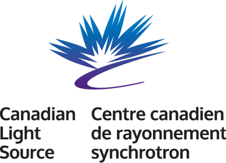

Welcome to the official WMCI Synchrotron Club and Science Website! Find resources, information and more!
This is the official WCMI Synchrotron Club website. Learn about how the Canadian Light Source works with examples and sample past projects. Our meetings are held on Fridays at lunch as we prepare to go the CLS on December 6th.
This image illustrates the path from the LINAC to the experimental station if you want to learn more about the structure of the CLS click here.